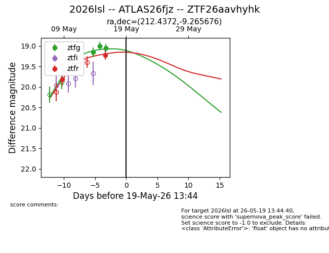
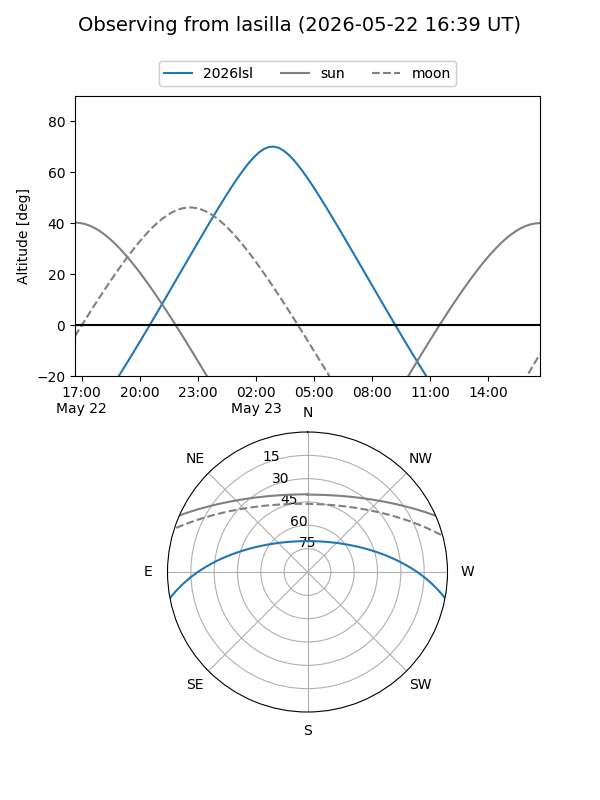
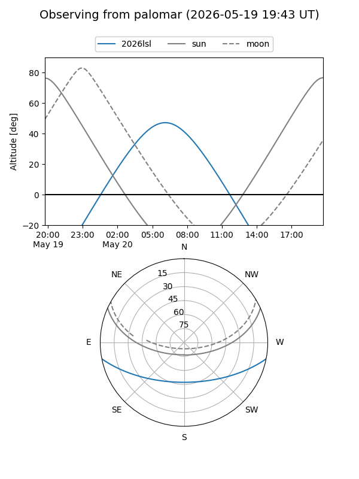

2026lsl
Target 2026lsl at 2026-05-19 13:46
Aliases and brokers:
FINK: link
Lasair: link
ALeRCE: link
TNS: link
YSE: link
alt names
ZTF26aavhyhk (ztf,fink_ztf)
2026lsl (tns,yse)
ATLAS26fjz (atlas)
Coordinates:
equatorial (ra, dec) = 212.4372,-9.26568
equatorial (HMS+DMS) = 14:09:44.92,-09:15:56.43
galactic (l, b) = (333.1716,+48.95342)
Flags:
Photometry:
last ztfg=19.05, ztfr=19.22
4 ztfg, 3 ztfr detections
Lightcurve

Visibility


Additional plots